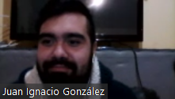
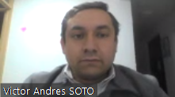
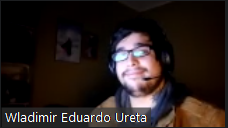
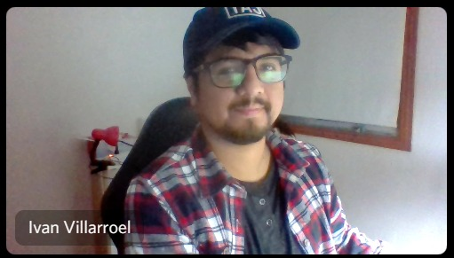
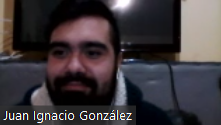
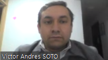
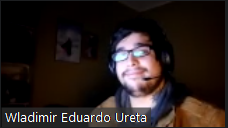
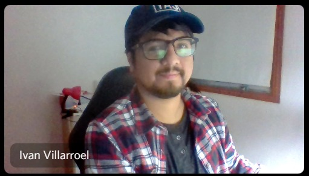

¿Quiénes Somos?
Simples personas con una visión de apoyo y ayuda a los demás, que tiene una idea sencilla pero muy clara: crear una red social de ayuda mutua.
La idea surgió de la forma mas insólita entre 6 amigos, riendo y discutiendo su nombre. Quizás ayuda la madre de Nueva Zelanda o ese rico trozo de pizza. Pero lo importante fue encontrar un balance entre ser ayuda social y económica para algunas personas.
Los creadores que ayudaron a nacer esta idea son:
 






